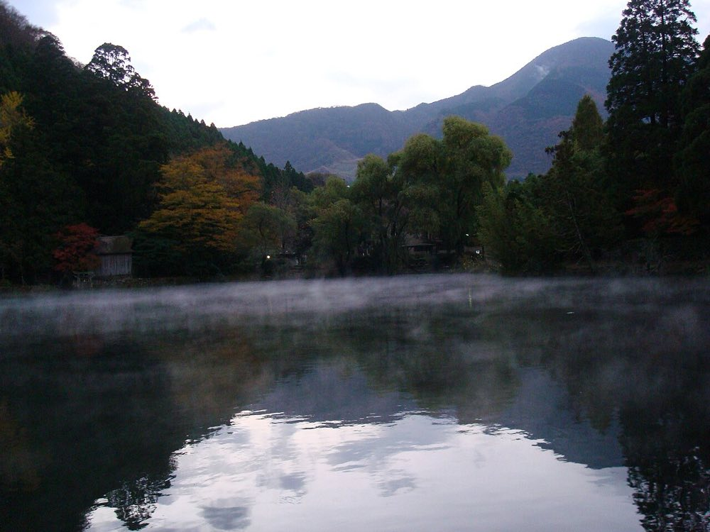
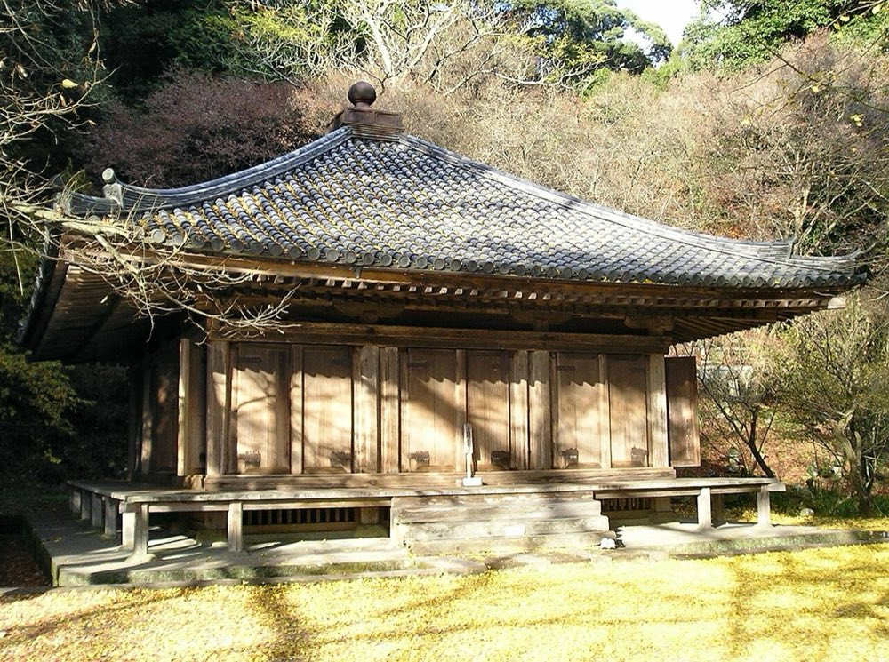
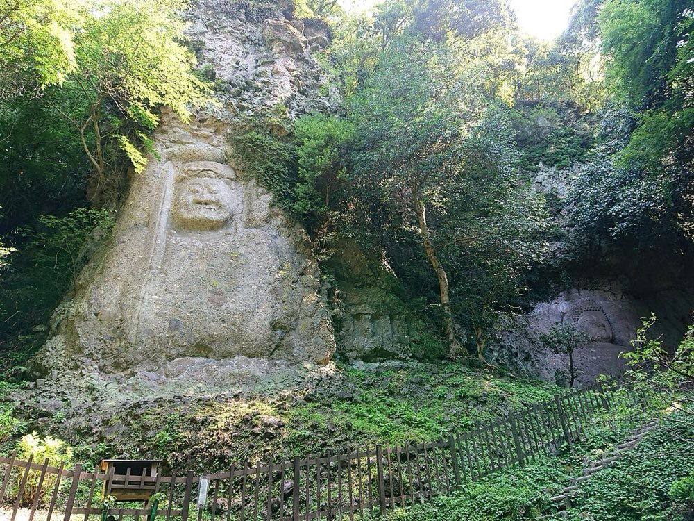

Oita Road Trip
Three or four days from Fukuoka: onsen in Yufuin, cliff temples and outdoor art on the Kunisaki Peninsula, Beppu's hot springs, and the stone Buddhas of Usuki. By car, or by train with a tour bus for Kunisaki.
Researched November 2026 for a December trip. Hours and prices change, so check before you go. Drive distances and times are estimates; confirm in Google Maps.

Why Oita
If you liked Naoshima and the Setouchi islands, this is Kyushu’s closest match: contemporary art set in the landscape, some of Japan’s oldest Buddhist sites, and a hot spring at the end of every day.
In December: cool and mostly dry, about 5–13°C, with frost and morning mist in Yufuin: proper onsen weather. Off-peak until the year-end rush (avoid 28 Dec–4 Jan). OPAM’s Renoir and Idemitsu shows run all month.
The route: Fukuoka Airport → Yufuin → Kunisaki Peninsula → Beppu → Oita and Usuki → Usa → Fukuoka. 4 days and about 560 km by car (3 days, about 450 km), or by train with a tour bus for Kunisaki.
Highlights
- COMICO Art Museum and Lake Kinrin in the morning mist
- Kunisaki: cliff-carved Buddhas, Kyushu’s oldest wooden hall and Antony Gormley on a ridge
- Beppu: the “hells”, the Kannawa steam vents and a steam-cooked dinner
- Usuki Stone Buddhas, a National Treasure
- OPAM: Renoir, and Tōhaku’s Bamboo and Tiger screens from 15 Dec
Good to know
- Several museums close on Mondays; keep them off the last day.
- Fuki-ji’s hall stays shut in rain, so keep a dry spell for Kunisaki.
- Ask for winter tyres: mountain roads can ice over early in the morning.
Two ways to do it
💰 Best value: 3 days, 2 nights by car
- Stay: Sansou Syaranoki in Yufuin (about CNY 1,100, reportedly with dinner and breakfast), then Nishitetsu Resort Inn Beppu (about CNY 700, rooftop onsen).
- Do: COMICO and Lake Kinrin → the Kunisaki temples and Gormley → the Beppu hells and OPAM.
- Eat: soba at Etsu in Showa-no-Machi, steam-cooked dinner in Kannawa, toriten at Toyotsune.
- About CNY 2,950 per person excluding flights. You miss Usuki and Usa.
✨ Best experience: 4 days, 3 nights by car
- Stay: Yufuin Ryokan Yamanami (9.1, about CNY 1,850–2,050 a night) or Tsukanoma (9.3, open-air bath), with kaiseki dinner. Then two nights at Beppu Hatto Onyado Nono (9.0, about CNY 1,600 a night).
- Do: the full four days, plus the Mt Tsurumi ropeway, Showa-no-Machi and both OPAM shows. Time the trip to see Tōhaku's Bamboo and Tiger screens (from 15 Dec).
- Eat: ryokan kaiseki, an Usuki fugu lunch at Kappō Mitsugo, jigoku-mushi and Seki saba.
- About CNY 5,300–6,150 per person excluding flights.
The day-by-day plans below work for both; only the hotels and meals change.
Itinerary
🚗 Fukuoka Airport → Yufuin · 115 km · about 1h30–1h45
COMICO Art Museum (Kengo Kuma building; book a time slot), Lake Kinrin, Yunotsubo street, the Chagall museum by the lake. Onsen and dinner at the ryokan.
Fuki-ji (Kyushu's oldest wooden hall) 🚗 → Kumano Magaibutsu · 10 km · 20 min cliff Buddhas (arrive by 15:30) 🚗 → Futago-ji · 15 km · 25 min 🚗 → Gormley figure at Itsutsuji Fudō · 15 km · about 30 min or the Yoko Ono works at Nagasakibana. Lunch at Showa-no-Machi.
🚗 Kunisaki → Beppu (Kannawa) · 55 km · about 1h
Evening in Kannawa: steam-cooked dinner, sand bath.
OPAM (Renoir and Idemitsu shows). 🚗 OPAM → Usuki Stone Buddhas · 40 km · 45 min
Usuki Stone Buddhas (National Treasure, last entry 16:30), the old samurai lanes and the Inaba residence. 🚗 Usuki → Beppu · 50 km · 50 min
Usa Jingu, head shrine of all Hachiman shrines; Michi-no-eki Innai for local produce. 🚗 Usa → Fukuoka Airport · 130 km · about 1h50
Evening flight.
COMICO, Lake Kinrin, Yunotsubo street, onsen.
Fuki-ji → Kumano Magaibutsu → Futago-ji → Gormley or Nagasakibana. 🚗 Kunisaki → Beppu · 55 km · about 1h
Kannawa evening.
Evening flight. Usuki and Usa are dropped.
Fewer hotel moves? Stay all nights in Beppu and visit Yufuin as a day trip (Beppu → Yufuin 25 km, about 35 min), at the cost of the ryokan night.
By train (no car)
Oita has no Shinkansen; JR limited expresses link it to Fukuoka. Kunisaki is the hard part without a car.
- Hakata → Yufuin: Yufuin no Mori, about 2h10, ¥6,130 (cheaper online), all seats reserved, three a day each way; seats go on sale a month ahead. Some December days run the plainer Yufu instead. Or the highway bus from Fukuoka Airport, about 1h50, ¥3,250.
- Hakata → Beppu / Oita: Sonic limited express, about 2h to Oita, around ¥6,900 reserved, roughly every 30 min.
- Yufuin → Beppu: direct bus about 1h, or JR via Oita.
- Beppu → Oita: 10–15 min by JR. Oita → Usuki: JR Nippo line, about 45 min.
- Usa Jingu: JR to Usa station, then a 7–10 min bus (about ¥240) or a taxi.
- Kunisaki: the Oita Kotsu Kunisaki historic sites bus tour (about 9 h: Usa Jingu, Fuki-ji, Maki Ōdō, Kumano Magaibutsu, Futago-ji) from Oita station 8:50 or Beppu station 9:15, about ¥4,000–6,000, lunch extra. In December it may run on Sundays only; book on 097-534-7455. A chartered taxi is about ¥28,000–34,000 for 5–6 hours.
- Rail pass: the JR Kyushu Northern Kyushu Pass is ¥15,000 for 3 days or ¥17,000 for 5. Hakata → Yufuin plus Oita → Hakata alone is about ¥13,000, so a 3-day pass only pays if you also ride to Usuki or Usa.
Top sights





.jpg){kind=link}


- Kunisaki temples: Fuki-ji (8:30–16:30, ¥500; hall interior closed in rain), Kumano Magaibutsu (300 m of steep stone steps), Futago-ji (8:30–16:30).
- Kunisaki outdoor art: Antony Gormley's Another Time XX below Itsutsuji Fudō, Yoko Ono's works at Nagasakibana. Free, outdoors.
- Usuki Stone Buddhas: 9:00–17:00, last entry 16:30, ¥550. Then the old samurai lanes (Nio-za) and the Inaba family residence (9:00–17:00).
- Beppu hells: seven hot springs to look at, 8:00–17:00 daily; two-day ticket about ¥2,200.
- Kannawa and Takegawara Onsen: steam vents and a 1938 wooden bathhouse with a sand bath (bath ¥300, sand bath ¥1,500).
- Lake Kinrin, Yufuin: spring-fed pond, famous for winter morning mist. Free.
- Usa Jingu: grounds 6:00–18:00; the treasure hall may close Mon or Tue.
- Bungotakada Showa-no-Machi: a preserved 1950s–60s shopping street and the Showa Roman Kura toy museum (¥900).
- Mt Tsurumi ropeway, Beppu: up to 1,300 m; winter last car up 16:30, ¥1,800 return; stops in bad weather.
- Takasakiyama: wild macaques between Beppu and Oita, 9:00–17:00, about ¥520.
- Harajiri Falls: a 120 m-wide waterfall, about 40 km inland from Usuki. Free.
On in December 2026
- OPAM, Oita: Our Renoir (23 Nov–17 Jan, ¥1,600) and Idemitsu Museum Masterpieces (13 Nov–11 Jan, ¥1,500; ¥1,000 with the Renoir stub). Works swap mid-run: Hasegawa Tōhaku's Bamboo and Tiger screens from 15 Dec. Open every day in December; to 20:00 Fri and Sat.
- Oita City Historical Museum: Oitarashisa: memories of history, to 13 Dec, ¥310.
- Not yet announced: Oita City Art Museum, Riman (the prefectural history museum in Usa), and the Yufuin museums had no December 2026 show published when checked. Beppu's art fair is in late January.
Museums
| Museum | Hours | Closed | Entry |
|---|---|---|---|
| OPAM (Oita Prefectural Art Museum) | 10:00–19:00 | Open daily | by show |
| COMICO Art Museum, Yufuin | 9:30–17:00, last entry 16:00 | Alternate Wednesdays | ¥1,700, timed entry |
| Marc Chagall Museum, Lake Kinrin | 9:00–17:00 | Irregular | about ¥600 |
| Oita City Art Museum | 10:00–18:00 | Mondays; 28 Dec–4 Jan | ¥440 |
| Riman, prefectural history museum, Usa | 9:00–17:00 | Mondays | about ¥310 |
| Beppu Bamboo Crafts Center | 8:30–17:00 | Mondays | about ¥300 |
Several museums close on Mondays, so keep them off the last day of a Fri–Mon trip.
Where to eat
Tabelog 3.49 · 920 reviews badges are Tabelog scores: 3.0 is average, 3.5+ very good, 3.6+ excellent. Scores on few reviews mean little data rather than poor food. Read from Tabelog search listings on 26 Nov 2026.
Picked to sit on the route, with closing days checked for a December weekend. Several places close irregularly, so phone a week ahead.
Day 1
- Lunch: Ramen Runway, Fukuoka Airport domestic 3F, ¥1,000–1,500. Or Yufu Mabushi Shin Tabelog 3.50 · 425 reviews by Yufuin station, Bungo beef rice bowls, ¥2,000–3,200 (11:00–16:00).
- Dinner and breakfast: at the ryokan; check the plan, as some Yufuin rates are room-only. If so, eat on Yunotsubo street before about 17:00.
Day 2
- Lunch: Juwari Soba Etsu Tabelog 3.55 · 113 reviews in Showa-no-Machi, coarse-ground soba from Bungotakada flour, ¥1,000–2,000 (about 20 min from Fuki-ji; closed Tue; 26 seats, so arrive near 11:00 or call 0978-25-4617).
- Dinner: Jigoku-mushi Kobo Kannawa Tabelog 3.49 · 636 reviews, steam-cook your own seafood, ¥1,500–3,000; last order 18:00, no bookings. Backup: Toyotsune Tabelog 3.49 · 920 reviews for toriten (closed Tue and Wed).
Day 3
- Breakfast: hotel buffet (about ¥1,800 at Nishitetsu).
- Lunch: Kappō Mitsugo Tabelog 3.58 · 51 reviews for an Usuki fugu lunch course, about ¥5,000+, book on 0972-62-5107 (open daily). Cheaper: Tonkō Tabelog 3.62 · 65 reviews, Chinese set lunch ¥1,000–2,000 (closed Wed; sometimes closed for private parties, so call 0972-62-8662). On the 3-day plan: AMU Plaza at Oita station.
- Dinner: Toyotsune Tabelog 3.49 · 920 reviews, toriten and Seki saba, ¥2,000–4,000. Or Kogetsu Tabelog 3.49 · 900 reviews, the original Beppu reimen, about ¥900 (cash, weekends to 19:00).
Day 4
- Breakfast: hotel, or anpan from Tomonaga Pan-ya Tabelog 3.60 · 663 reviews (closed Sun).
- Lunch: Kakumasa on the Usa Jingu approach Tabelog 3.3–3.5 · 90 reviews, dango-jiru and toriten, about ¥1,000. Usa's famous karaage shops Taiko and Suzuya close on Mondays.
Shopping
- Yunotsubo street, Yufuin: crafts, sweets, local snacks; shops about 9:30–17:30. Yufuin Floral Village for a quick, touristy look.
- Beppu station arcades (Yayoi Tengai, Takegawara): bamboo crafts, onsen goods, toriten to go.
- AMU Plaza Oita at Oita station: big station mall, 10:00–20:30 (Fri–Sun to 21:00).
- Tokiwa department store, Oita: food basement for kabosu, dried shiitake and other Oita gifts.
- Showa-no-Machi, Bungotakada: retro sweets and grocers.
- Michi-no-eki Innai, Usa: farm produce, shiitake and kabosu, 8:00–17:00 daily.
- Fukuoka Airport domestic 2F: Hiyoko and other Fukuoka gifts for the flight home.
Where to stay
Cheapest room for two, including taxes, seen on Booking.com in late November 2026 for a December weekend. Ryokan rates often depend on whether dinner is included.
Yufuin Onsen 8A1 Yaeichi
9.6About CNY 1,200 a night. Meal plan not confirmed.
Sansou Syaranoki
9.7About CNY 1,100 a night; reportedly with dinner and breakfast. Quieter side of town.
Nishitetsu Resort Inn Beppu
8.0About CNY 700 a night. Rooftop open-air onsen; breakfast buffet about ¥1,800.
Budget
Per person, two sharing a room and a car, excluding flights. Estimated November 2026, ¥1 ≈ CNY 0.047.
- 4 days, 3 nights: about CNY 3,900–4,450 (stays 1,300 · car, expressway pass and fuel 1,100–1,500 · food 1,000–1,200 · entry fees 460)
- 3 days, 2 nights: about CNY 2,950–3,350
- Best-experience version (4 days): about CNY 5,300–6,150
- By train instead of a car: rail about ¥13,000–15,000 per person, plus the Kunisaki tour bus ¥4,000–6,000.
Not included: flights, ryokan dinner if the rate is room-only, shopping, travel insurance.
Driving
- Foreign licences need a 1949 Geneva-type International Driving Permit, carried with the original licence.
- Kyushu Expressway Pass: 3 days ¥8,400, 4 days ¥10,600, booked with the car. Toyota, Budget, ORIX and Nippon Rent-A-Car were not offering it when checked.
- Ask for winter tyres or chains: the Yufuin uplands and Kunisaki mountain roads can ice over in the early morning.
- Total driving: about 550 km over four days, or about 450 km over three.
Sources
Checked 26 November 2026. Official sites were used wherever possible. Some opening hours and prices come only from listing sites (Tabelog, rurubu, Mapple, NAVITIME, Retty) and may be out of date, so confirm closing days before you go. Drive distances and times are estimates from route planners. Hotel scores are Booking.com guest reviews out of 10. Everything here is summarised in our own words. How this research is done →
- Museums and exhibitions: OPAM (calendar and exhibitions) · COMICO Art Museum · Oita City Historical Museum · Oita City Art Museum · Riman, Usa
- Sights: Usuki Stone Buddhas · Usuki tourism · Beppu hells · Tokyo Art Beat (Kunisaki art) · MLIT roadside stations
- Trains, roads and driving: JR Kyushu Yufuin no Mori · JR Kyushu Rail Pass · Oita Kotsu Kunisaki tour · NEXCO West, Kyushu Expressway Pass · JAF (driving permits)
- Food: Tabelog (hours, closing days, prices) · Jigoku-mushi Kobo · Mapple · Retty
- Hotels: Booking.com (prices and guest scores, 26 Nov 2026) · Jalan (meal plans)
- Weather: Japan Meteorological Agency
- Photos (Wikimedia Commons, free licences): Usuki Stone Buddhas (Photo: Maarten Heerlien, CC BY 2.0) · Lake Kinrin in morning mist, Yufuin (Photo: Tzu-hsun, Hsu, CC BY-SA 4.0) · Fuki-ji, Kyushu's oldest wooden hall (Photo: STA3816, CC BY-SA 3.0) · Kumano Magaibutsu cliff Buddha (Photo: Hajime NAKANO from Tokyo, Japan, CC BY 2.0) · Umi Jigoku, Beppu (Photo: 663highland, CC BY 2.5) · OPAM, designed by Shigeru Ban (Photo: Suicasmo, CC BY-SA 4.0)